1649
Let us With A Gladsome Mind _ John
Milton 欢然颂主 ▲
|
|
|
|
1 Let us, with a gladsome mind,
praise the LORD, for He is kind:
for His mercies shall endure,
ever faithful, ever sure.
2 Let us blaze His Name abroad,
for of gods He is the God:
for His mercies shall endure,
ever faithful, ever sure.
3 He with all-commanding might
filled the new-made world with light:
for His mercies shall endure,
ever faithful, ever sure.
4 All things living He doth feed;
His full hand supplies their need:
for His mercies shall endure,
ever faithful, ever sure.
5 He His chosen race did bless
in the wasteful wilderness:
for His mercies shall endure,
ever faithful, ever sure.
6 He hath with a pious eye
looks upon our misery:
for His mercies shall endure,
ever faithful, ever sure.
7 Let us therefore warble forth
His high majesty and worth:
for His mercies shall endure,
ever faithful, ever sure.
Source: Hymns to the Living
God #37
|
大家欢然颂扬主，因祂和爱实宏 深，
因祂慈受不变更，永远稳定永真诚。
2 大家广布主荣名，祂是万灵大至尊，
经祂发令显权能，新天新地满光明。
3 祂使金黄好太阳，每日行走祂路程；
祂使新月照黑夜，陪伴群星发光明。
4 受造万灵祂喂养，圣恩供给总丰盈；
因祂慈爱不变更，永远稳定永真诚。
都當歡樂讚∼美∼主，因主恩典多難數。
傳揚主名遍∼四∼海，主乃惟一的真神。
主以奇異的∼權∼能，造光遍照天與地。
主伸恩慈的∼雙∼手，飽賜地上萬眾生。
選民昔日遭∼危∼難，蒙主護佑恩非淺。
今我雖然遇∼苦∼處，我主慈目仍看顧。
所以我當讚∼美∼主，因主恩典多難數。
副歌：主自∼古懷慈愛念，慈愛∼長久不改變。
|
|
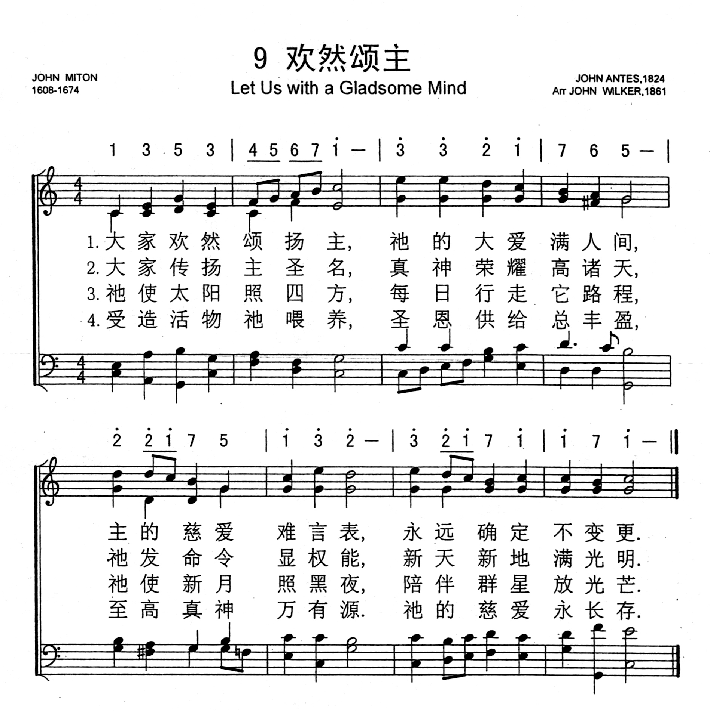
http://www.xueshengshi.com/?p=849

|
| |
|
http://www.xueshengshi.com/?p=849
John Milton, 1608-1674
你们要称谢耶和华，因祂本为善，祂的慈爱永远长存。（诗 136:1）
神所悦纳的赞美，是像小孩子般真诚完全的赞美。在马太 21:15
记载着，当祭司长和文士看见小孩子在殿里感谢赞美神，他们就甚恼怒。但耶稣说，是的，经上说，你从婴孩和吃奶的口中，完全了赞美的话，你们没有念过吗？（太
21:16）句话的意思，是主引用诗篇的话告诉我们，一个婴孩和吃奶的人，他们口中的话，是真正完全的赞美。我们祷告时常说，主啊，我感谢你，我赞美妳，在人前也满口的感谢主赞美神，但是这句话到后来就变成「口头禅」了，失去了应有的内容，变成一套形式毫无真实意义。可是从一个婴孩的口中所出来的赞美，那是真的，完全的，是神所要的。我们要向小孩子学习，首先要学习他的赞美，因为这种赞美，实在发自内心，话语不一定好听，字眼不一定很属灵，话也很短，意思也简单，并不堂皇美丽，然而心意很诚；所以天父喜欢，因为那实在是从心灵深处发出来的。
这首诗是著名的英国盲诗人 John Milton 写于 15 岁，当时正在伦敦圣保罗学校读书。他的圣诗都是翻译诗篇的作品，这首「欢然颂主」即根据诗篇第 136
篇的大意写成，原诗共有二十四节，目前的诗集只采其中的五节，中文只译四节。

John Mi1ton 在文学史上，有人认为其地位，仅次于莎士比亚。其文学名著「失乐园」与「复乐园」乃众所皆知。但很少人知道我们的唱诗集内，还有他的作品。他在
1652 年不幸失明，但仍不停工作，直到 1674 年逝世为止。英国圣诗之父 Isaac Watts 及 Char1es Wesley 都受其影响深远。
1 大家欢然颂扬主，因祂和爱实宏 深，因祂慈受不变更，永远稳定永真诚。
2 大家广布主荣名，祂是万灵大至尊，经祂发令显权能，新天新地满光明。
3 祂使金黄好太阳，每日行走祂路程；祂使新月照黑夜，陪伴群星发光明。
4 受造万灵祂喂养，圣恩供给总丰盈；因祂慈爱不变更，永远稳定永真诚。
＊「靠主常喜乐」是主的命令。 ── 罗炳森师母
https://zh.wikipedia.org/wiki/%E7%BA%A6%E7%BF%B0%C2%B7%E5%BC%A5%E5%B0%94%E9%A1%BF
維基百科，自由的百科全書
跳至導覽跳至搜尋
約翰·米爾頓（英語：John Milton，1608年12月9日－1674年11月8日），英國詩人，思想家。英格蘭共和國時期曾出任公務員。因其史詩《失樂園》和反對書報審查制的《論出版自由》而聞名於後世。
米爾頓的一生幾乎與斯圖亞特王朝相伴而行，他的詩歌創作和政治觀點伴隨英國革命而發展，當1674年已經失明的米爾頓去世時，米爾頓依然沒有放棄自己的政治選擇，並且他的觀點在此後廣泛影響了整個歐洲的政治和宗教信仰。
早年生涯[編輯]
1608年12月9日，生於倫敦一個富裕的清教徒家庭。
劍橋歲月[編輯]
1625年進入劍橋大學，作為一個才華橫溢的學者，米爾頓在劍橋大學的基督學院完成他的學士學位和1632年碩士學位後，便開始專心於詩歌寫作。
創作、學習和旅行歲月[編輯]
1632年至1638年五年間，米爾頓辭去了政府部門的工作，住到他父親郊外的別墅中，整日整夜的閱讀，他幾乎看全了當時所有英語、希臘語、拉丁語和義大利語作品。在這段時期米爾頓寫作了《酒神之假面舞會》等一些作品。1638年，米爾頓去歐洲旅行，他在義大利停留了大部分時間。訪問過當時已被囚禁的伽利略，並同義大利人文主義者有所交往。由於英國動盪的宗教局面米爾頓提前回國，他所寫的一些小冊子被歪曲，他本人也被烙上了激進分子的烙印。
內戰、婚姻和仕途[編輯]
1642年，米爾頓與瑪利·普威爾結婚，新娘只有17歲。六個星期後，無法處理好新婚生活的瑪利回到了她父母家，米爾頓寫信要求離婚。但最終他們和解了，瑪利為米爾頓生下了四個孩子，其中的一個孩子生下沒多久就夭折了。
中年以後，米爾頓從政，他寫了許多觀點鮮明的政治文章；其時恰逢英國內戰，共和、復辟大動亂；克倫威爾派的米爾頓曾在其國務會議中任拉丁文秘書。
米爾頓曾多次寫一些論述離婚的小冊子。1644年，因為這類小冊子，再次被國會招去質詢，惱怒之際，慷慨陳辭，誕生言論出版史上里程碑式的文獻——《論出版自由》。但這次充滿激情和思辨的演講在當時並未引起太大反響，出版許可制度在半個世紀後才在英國叫停。不過，由於美國獨立戰爭和法國大革命，米爾頓的思想逐漸被世人認識並受到推崇。《論出版自由》被譯為多種文字，流傳開來。
1652年，瑪利病逝。1654年，米爾頓原本就衰弱的視力變得更壞，他徹底失明了。
1656年，米爾頓再婚，兩年後，這位新妻子因為難產而死。
1660年查理二世復辟，米爾頓被捕入獄，退出政治活動，致力詩歌創作。在雙目失明的情況下，口述完成使他名揚後世的三部偉大著作：《失樂園》和《復樂園》，詩劇《力士參孫》。
1663年，米爾頓最後一次結婚，妻子是伊莉莎白·明薩爾，這段婚姻比較幸福。
米爾頓死於1674年11月8日，死後他與喬叟、莎士比亞齊名。
影響及評價[編輯]
米爾頓首先是一位文學家，在詩歌創作上有傑出貢獻。同時，作為一位思想家，他的《論出版自由》成為言論出版史上自由主義的里程碑，和後來密爾的《論自由》一道，被視為報刊出版自由理論的經典文獻。但需要說明的是，《論出版自由》1644年獲許出版，流傳不廣，影響不大，直到1778年才第一次再版。不過，由於美國獨立戰爭和法國大革命，米爾頓的思想逐漸被世人認識並受到推崇。《論出版自由》被譯為多種文字，流傳開來。由此確立的言論自由基石：「觀點的自由市場」和「真理的自我修正」影響一直持續至今。維基百科的編輯和書寫理念也源於此。
「米爾頓本人也是一名書報檢查官，他主張儘可能多的自由，主張使用限制的最低原則，即此自由不能侵犯彼自由。」[1]
代表作品一覽[編輯]
詩歌與戲劇[編輯]
- 《酒神之假面舞會》（the
masque Comus，1634年）
- 《失樂園》（Paradise
Lost，1667年）
- 《復樂園》（Paradise
Regained，1671年）
- 《力士參孫》（Samson
Agonistes，1671年）
散文與政論[編輯]
- 《論出版自由》（Areopagitica：A
Speech for the Liberty of Unlicensed Printing，1644年）
- 《為英國人民聲辯》（Defensio
pro Populo Anglicano，1651年）
- 《建設自由共和國的簡易方法》（The
Ready and Easy Way to Establish a Free Commonwealth，1660年）
https://www.umcdiscipleship.org/resources/history-of-hymns-let-us-with-a-joyful-mind
BY C. MICHAEL HAWN
John Milton
“Let Us With a Joyful Mind”
by John Milton;
adapt. by Thomas H. Troeger,
The Faith We Sing, No. 2012.
Let us with a joyful mind
praise our God forever kind,
rich with mercies that endure,
ever faithful, ever sure.*
*© Adapt. Oxford University Press, Inc. All rights reserved. Used by
permission.
Rarely is a first-class poet also a hymn writer. While classic hymns may
be viewed as a subset of poetry, writing for congregational singing is a
different skill from writing for a collection to be read as devotional
literature. Several poets in the seventeenth, eighteenth, and, to some extent,
the nineteenth centuries wrote devotional poems that were set to music and
included in hymnals. These poems had to meet the rigors of meter and prosody
demanded of classic hymn structure. Free verse poetry does not work in classical
hymn structures. Most notable, perhaps, is George Herbert (1593-1633), whose
hymns “Let all the world in every corner sing” (The United Methodist Hymnal, 93)
and “Come, My Way, My Truth, My Life” (UMH 164) often find their way into
congregational collections. Though his poems are rarely included in hymnals,
American poet Walt Whitman (1819-1892) has had some poems adapted as hymns.
Fellow northeasterner Henry Wadsworth Longfellow (1807-1882) has also had some
poems adapted as hymns. Even Charles Wesley, whose literary output spanned a
range of poetic genres, has only more recently been included in more general
anthologies of eighteenth-century poetry.
With John Milton (1608-1674), we unquestionably have a world-class poet.
British hymnologist and literary scholar Richard Watson summarizes not only the
significance of Milton as a poet, but also his influence on Charles Wesley:
“Milton’s work is of immense importance for the history of English
literature. The benign shadow of Paradise Lost lies over English poetry
throughout the 18th century, and an understanding of it is fundamental to a
reading of Blake and Wordsworth. His influence is felt in hymn writing most
clearly in the work of Charles Wesley, whose poetry often echoes Milton, either
in the use of individual lines or in the more general understanding of the
pattern of Fall and Redemption found in Paradise Lost.”
Milton’s direct contribution to congregational song may be found in his
metrical psalms, a sub-genre of classical hymns. As the eminent hymnologist John
Julian noted over a century ago, “[Milton’s] influence on English hymn-writing
has been very slight, his 19 versions of various Psalms having lain for the most
part unused by hymnal compliers.” The exception would be one of his two metrical
versions of Psalm 136. Of all Milton’s metrical psalms, our hymn is by far the
runaway favorite for inclusion in hymnals, seven times over its nearest rival,
“The Lord will come and not be slow.”

Milton’s original metrical version, written with others during 1623-1624,
has twenty-four stanzas, obviously too many for congregations to sing. (For the
complete original text by John Milton, see http://www.bartleby.com/4/103.html.)
Therefore, from the beginning, hymnal editors have had to adapt Milton’s poem in
some way to accommodate the needs of congregational singing. While hymnals
earlier in the twentieth century often included six or even seven stanzas from
the original poem, more recently, this number is reduced to five or four. The
recently published Glory to God (PCUSA, 2013), for example, includes adapted
versions of stanzas one, seven, and twenty-two, closing with a reprise of the
first stanza.
The Faith We Sing has included an updated version of this metrical psalm
adapted by Thomas H. Troeger (b. 1945), the J. Edward and Ruth Cox Lantz
Professor of Christian Communication Emeritus, Yale Divinity School and Yale
Institute of Sacred Music, where he taught from 2005-2015. A highly published
hymn writer and poet himself, he brings unusual sensitivity to the task of
providing us with a version of Milton’s psalm that we can sing today. He wrote
his paraphrase of Milton’s version at the request of the editors for The New
Century Hymnal (1995), who, according to the author, “wanted to keep the energy
and grandeur of Milton, but in an inclusive and more contemporary idiom.” No
hymnal includes any exact replication of Milton’s metrical psalm, always
reducing the number of stanzas and making significant alterations to the
original text.
To gain some insight into the nature of Professor Troeger’s work, let us
compare Milton’s original with the adaptation:
|
1. Let us with a gladsome mind
Praise the Lord for he is kind:
Refrain:
For his mercies aye endure,
Ever faithful, every sure. |
1. Let us with a joyful mind
praise our God forever kind,
Refrain:
rich with mercies that endure,
ever faithful, ever sure.* |
|
7. That by his all-commanding might,
Did fill the new-made world with light;
Refrain. |
2. New-made earth was filled with light
through God’s all commanding might,*
Refrain. |
|
8. And caused the golden-tressèd Sun
All the day long his course to run;
Refrain. |
3. Dazzling bright the sun obeys
God who shines with brighter rays,*
Refrain. |
|
9. The hornèd Moon to shine by night
Amongst her spangled sisters bright;
Refrain. |
4. Stars and moon that spangle night
all depend o heaven’s light,*
Refrain. |
|
22. All living creatures he doth feed,
And with full hand supplies their need;
Refrain. |
5. Creatures of the sea and land
all are fed by God’s own hand,*
Refrain. |
|
1. No repeat in the original. |
1. Therefore with a joyful mind
praise our God forever kind,*
Refrain. |
In comparison, several observations may be made.
First, the recent version allows for inclusive language.
Second, Milton’s version does not scan uniformly, generally a sine qua non for
classical hymn structures. Taking only the first line of each stanza, the number
of syllables in Milton’s poem varies – 7, 8, 8, 8, 8 respectively. In addition,
the first stanza of Milton’s original is trochaic (strong/weak accent) while the
others are iambic (weak/strong accent).
Third, some seventeenth-century words simply do not relate or would be
distracting to singers attempting to stay together. These include “gladsome,”
“golden-tressèd Sun,” and “hornèd Moon.” (Readers might recall the latter used
by the character of Moonshine in William Shakespeare’s A Midsummer Night’s
Dream, Act 5, Scene 1, written between 1590-1596.)
Finally, all versions exclude much of the narrative presented in Psalm 136. In
addition to a discussion of God’s faithfulness in the natural created order, the
psalm gives considerable attention to the deliverance of Israel.
What then are we to make of the adaptation by Thomas Troeger and, indeed,
others who have modified Milton’s original throughout the last three centuries?
I prefer to think of Professor Troeger’s version much like a translation of a
text from another language into English; that is, a new art work inspired by a
poem from another time, place, and culture. The advantage of what the Rev.
Troeger has offered us is that he skillfully maintains the energy of Milton’s
original – even retaining much of the original language, smoothes out the
metrical inequities, and allows us to join whole-heartedly into the singing.
Just as many hymns we sing in translation span centuries from the original to
the adaptation (or translation), so does this hymn. In this case, we actually
touch on three eras at once: the biblical era in which the psalm was composed,
the seventeenth century in which Milton penned his metrical paraphrase, and the
late twentieth century with a creative adaptation for our time. Indeed, hymn
singing is a timeless ritual action that engages us with the witness of the
faithful in all places and times.
C. Michael Hawn is University Distinguished Professor of Church Music,
Perkins School of Theology, SMU.
https://hymnary.org/tune/monkland_wilkes
Notes
The tune MONKLAND has a
fascinating if complex history. Rooted in a tune for the text "Fahre fort"
in Johann A. Freylinghausen's (PHH
34) famous hymnal, Geistreiches Gesangbuch (1704), it then was
significantly altered by John Antes (b. Frederick, PA, 1740; d. Bristol,
England, 1811) in a Moravian manuscript, A Collection of Hymn Tunes (c.
1800). Antes was a missionary, watchmaker, business manager, and composer.
Born near the Moravian community of Bethlehem, Pennsylvania, he was trained
at the Moravian boys' school and later received religious education and
further training as a watchmaker in Herrnhut, Germany. From 1770 to 1781 he
served as a missionary in Egypt and from 1783 until his death was the
business manager of the Moravian community in Fullneck, England. Although
music was his avocation, Antes was a fine composer and musician. Among his
compositions are a number of anthems, several string trios, and over fifty
hymn tunes.
MONKLAND received its
present shape at the hands of John Lees in another Moravian hymnal, Hymn
Tunes of the United Brethren (1824). From there John Wilkes (b.
England, date unknown; d. England, 1882) simplified it and introduced it to
Henry W. Baker (PHH
342), who published it in the English Hymns Ancient and Modern (1861)
to his own harvest-theme text, "Praise, O Praise Our God and King." Wilkes
named the tune after the village where he was organist and Baker was vicar–Monkland–located
near Leominster in Herefordshire, England. Wilkes died around 1882; he
should not be confused with the better-known John Bernard Wilkes
(1785-1869).
MONKLAND's well-designed
melodic contour is a good match for the text. Sing the tune in parts, except
on the refrain line, which is appropriately sung in unison.
--Psalter Hymnal
Handbook, 1988
https://wordwisehymns.com/2011/08/26/let-us-with-a-gladsome-mind/
Words: John Milton (b. Dec. 9, 1608; d. Nov. 8, 1674)
Music: Monkland, by John Antes (b. Mar. 24, 1740; d. Dec. 17, 1811)
Links:
Wordwise Hymns
The Cyber Hymnal
Note: The tune Innocents also works with the hymn, an old French melody
harmonized by William H. Monk in 1850.
This old hymn was written in 1623, when Milton was fifteen years old. It is a
paraphrase of Psalm 136, with the psalm’s repeated antiphonal response framed as
the refrain of the song. One can picture the Levites and the people of Israel ,
singing this song back and forth.

Each of the 26 verses of the psalm ends with: “For His mercy endures forever.”
The Hebrew word translated “mercy” is checed, including such qualities as
goodness, kindness and faithfulness. It is sometimes translated “lovingkindness,”
or “steadfast love.” And God’s checed for His people is unchanging and
everlasting.
The incessant repetition of the psalmist’s theme certainly emphasizes that the
loving care of the Lord endures forever, that we can count on it being
unfailing, and steadfast. But why repeat it so often? There’s also a negative
implication in the repetition–that we so often forget this wonderful truth. All
of our worry and anxiety, and fleshly scheming, shows how unconvinced we are. We
need this memory aid: “His mercy endures forever!”
CH-1 and 2 covers Ps. 136:1-3, which is a declaration of the utter supremacy of
God over the idol gods of the nations (cf. Ps. 96:5).
Let us, with a gladsome mind,
Praise the Lord, for He is kind.
For His mercies aye endure,
Ever faithful, ever sure.
Let us blaze His name abroad,
For of gods He is the God.
CH-3, as well as CH- 5 and 6, have to do with God’s creative power, which is
described at greater length in Ps. 136:4-9. He is the Maker of all things (cf.
Gen. 1:1-3; 31; Heb. 1:3).
He with all commanding might
Filled the new made world with light.
He the golden tressèd sun
Caused all day his course to run.
Th’horned moon to shine by night;
’Mid her spangled sisters bright.
CH-4 seems to give a summary of God’s deliverance of Israel from bondage in
Egypt, later enabling them to put down their enemies and conquer the Promised
Land (Ps. 136:10-24).
He hath, with a piteous eye,
Looked upon our misery.
In stanza CH-7 we have a paraphrase of Ps. 136:25, which exalts the Lord for
providing food for “all flesh” (cf. Ps. 145:15).
All things living He doth feed,
His full hand supplies their need.
As believers, we can praise the Lord because, at all times, and in all
circumstances, His steadfast love is unchanging!
Questions:
1) How has the Lord demonstrated His unfailing love and kindness to you, in the
past week?
2) Has your church ever tried singing this hymn antiphonally? You might divide
men and women, or one side of the sanctuary and the other, and echo the stanzas
and the refrain back and forth.
https://www.hymnologyarchive.com/let-us-with-a-gladsome-mind
PSALM 136
adapted as
Praise, O praise our God and King
with MONKLAND
(FAHRE FORT)
I. Text: Origins
This paraphrase of Psalm 136 is by John Milton (1608–1674), first published in
his Poems (London: Ruth Raworth, 1645 | Fig. 1). This first printing contained
24 couplets with a two-line refrain, “For his mercies ay endure, / Ever
faithful, ever sure.” It followed a paraphrase of Psalm 114, which was labeled,
“This and the following psalm were done by the author at fifteen years old.”
Psalm136-0-Milton1645.jpg
Psalm136-1-Milton1645.jpg
Psalm136-2-Milton1645.jpg
Psalm136-2b-Milton1645.jpg
Psalm136-3-Milton1645.jpg
Fig. 1. Poems of Mr. John Milton, Both English and Latin (London: Ruth Raworth,
1645).
Milton revised his text for the 1673 edition of his Poems. In couplets 3 through
7, he corrected the grammar to read “who” rather than “that,” otherwise the text
is substantially the same. He also adjusted some spellings.
Milton_John-Poems_1673-12a.jpg
Milton_John-Poems_1673-12b.jpg
Milton_John-Poems_1673-13a.png
Milton_John-Poems_1673-13b.png
Fig. 2. Poems &c. Upon Several Occasions (London: Tho. Dring, 1673).
II. Text: Analysis
The text as a whole is a relatively faithful rendering of Psalm 136. His
opening line, “Let us with a gladsome mind,” is a unique interpretation of the
first verse, as is his line “who doth the wrathful tyrants quell,” which takes
the place of verse 3. In the twelfth couplet, “Erythraean” is another name for
the Red Sea. In the fourteenth couplet, “tawny” refers to the Pharaoh’s skin
color (orange-brown or yellow-brown). J.R. Watson has noted:
Milton uses a common Renaissance motif, which would have been instantly
perceived by his readers, contrasting the Christian God with the classical
deities. The hornèd moon represents Diana, and the golden-tressèd sun is Apollo.
In Milton’s appropriation of the psalm, the classical deities are controlled by
the God who is greater than them all.[1]
Milton’s textual meter is inconsistent and is typically modified by hymnal
editors. The editors of the Church Hymnal of Ireland felt some of the couplets
were “doggerel and quite unsuitable for singing.”[2]
III. Text: Adaptations
Milton’s refrain is often changed to read “For his mercies shall endure,” a
change dating as early as Thomas Call’s Tunes & Hymns as they are used at the
Magdalen Chapel (1762 | 2nd ed. shown at Fig. 3). Call made a number of
influential changes, especially the regularization of the six selected couplets
to 7.7.7.7. He removed the classical allusions to Diana and Apollo by changing
the sun from “golden tressed” to “glorious” and by removing the “horned”
adjective from the moon.
View fullsize
Fig. 3. Thomas Call, Hymns Anthems and Tunes with the Ode used at the Magdalen
Chapel (ca. 1766).
Fig. 3. Thomas Call, Hymns Anthems and Tunes with the Ode used at the Magdalen
Chapel (ca. 1766).
Some of Call’s alterations were carried over into Benjamin Williams’ Book of
Psalms (Salisbury: Collins & Johnson, 1781 | Fig. 4), especially the couplets on
the sun and moon. Williams made some of his own adjustments to the text,
including the opening line’s “joyful mind,” his second couplet, “Let us sound
his name abroad,” in place of “blaze,” and his own version of the “solid earth”
couplet, keeping Milton’s “solid” but changing his “watry plain.”
View fullsize
BookofPsalms-1781-518.jpg
View fullsize
Fig 4. The Book of Psalms (Salisbury: Collins & Johnson, 1781).
Fig 4. The Book of Psalms (Salisbury: Collins & Johnson, 1781).
Milton’s paraphrase was repeated and further altered by James Montgomery
(1771–1854), poet and editor, in his Christian Psalmist (Glasgow: Chalmers &
Collins, 1825 | Fig. 5). Montgomery used Call’s version of the refrain, but
otherwise gathered a different set of stanzas and initiated the practice of
bookending the hymn with the opening couplet. Montgomery’s version has been
repeated in other collections, including Charles Spurgeon’s Our Own Hymn Book
(1866), or more recently in the Church Hymnary, 4th ed. (2005).
View fullsize
ChristianPsalmist-1825-1stEd-84.jpg
View fullsize
Fig. 5. The Christian Psalmist (Glasgow: Chalmers & Collins, 1825).
Fig. 5. The Christian Psalmist (Glasgow: Chalmers & Collins, 1825).
Milton’s hymn was revised extensively as “Praise, O praise our God and King” by
Henry W. Baker (1821–1877) for the first edition of Hymns Ancient & Modern
(London: Novello, 1861 | Fig. 6). Sometimes Baker’s text is used as a
replacement for Milton’s, and sometimes it appears as an alternative in the same
hymnal. Baker’s text was fashioned as a harvest hymn, focusing on verse 25 of
the psalm (“He who gives food to all flesh,” ESV), but he also included the sun
and moon from verses 8 and 9. Baker’s notion of “richer food” might be a
reflection of John 6:27, where Jesus told the crowds, “Do not work for the food
that perishes, but for the food that endures to eternal life, which the Son of
Man will give to you” (ESV).
View fullsize
Fig. 6. Hymns Ancient & Modern (London: Novello, 1861).
Fig. 6. Hymns Ancient & Modern (London: Novello, 1861).
Other adaptations of Milton include “Let us gladly with one mind,” by Michael
Saward for Hymns for Today’s Church (1982), and “Let us with a joyful mind,” by
Thomas H. Troeger for The New Century Hymnal (1995).
IV. Tunes
Milton’s text was first set to music by Thomas Call in his Tunes & Hymns as they
are used at the Magdalen Chapel (London, 1762 | Fig. 3 above). Call’s tune rises
from 1 to 5 in the first phrase, then descends back to 1 in the second. In his
collection, he referred to the tune as ANTHEM 2. Call’s tune has not endured.
The tune most commonly associated with Milton’s text is MONKLAND. This tune is
sometimes said to have been derived from a German tune, FAHRE FORT, first
published in Johann A. Freylinghausen’s Geist-reiches Gesang-buch (Halle:
Wäysen-Haus, 1704 | 2nd ed. shown at Fig. 7) with melody and figured bass. The
first note of the melody is middle C; the bass line is shown in standard bass
clef. The tune is named after its related text, “Fahre fort, fahre fort, Zion
fahre fort im licht,” by Johann Eusebius Schmidt (1670–1745). In many English
collections it is named HOLY LORD. Freylinghausen’s tune rises an octave in
stepwise fashion then descends from the upper 3 back down to the high 1. It has
an irregular meter of 6.7.8.7.8.9.6. (or 3.7.8.7.8.9.3. excluding the repeated
texts).

View fullsize
Freylinghausen-1705-1076.jpg
View fullsize
Fig. 7. Geist-reiches Gesang-buch (Halle: Wäysen-Haus, 1705).
Fig. 7. Geist-reiches Gesang-buch (Halle: Wäysen-Haus, 1705).
The English tune MONKLAND was written by John Antes (1740–1811). The oldest
surviving examples of the tune are in two manuscripts—one containing 39 tunes,
the other containing 50—held in the archives of the Fulneck Moravian Church,
Yorkshire, England. Both MSS are labeled “A Collection of Hymn Tunes Chiefly
Composed for Private Amusement by John Antes” and are undated (Fig. 8a-b). The
tune is in both MSS with no significant differences, and in both copies it was
intended for the text “What good news the angels bring” by William Hammond
(1719–1783). In one collection, the text is labeled “H.B. No. 36,” which refers
to A Collection of Hymns for the Use of the Protestant Church of the United
Brethren (1789), therefore the MS is thought to date between 1789 and Antes’
move to Bristol in 1808.

View fullsize
Fig. 8a. John Antes, A Collection of Hymn Tunes Chiefly Composed for Private
Amusement , MS Ful/49/156, Fulneck Moravian Church, Yorkshire, England.
Fig. 8a. John Antes, A Collection of Hymn Tunes Chiefly Composed for Private
Amusement, MS Ful/49/156, Fulneck Moravian Church, Yorkshire, England.
View fullsize
Fortynine-201-3.jpg
View fullsize
Fig. 8b. John Antes, A Collection of Hymn Tunes Chiefly Composed for Private
Amusement , MS Ful/49/201, Fulneck Moravian Church, Yorkshire, England.
Fig. 8b. John Antes, A Collection of Hymn Tunes Chiefly Composed for Private
Amusement, MS Ful/49/201, Fulneck Moravian Church, Yorkshire, England.
Antes’ tune rises a full octave in the first phrase, mostly by step, then
descends from a high 3 down to 5. The alleged connection between Antes and
Freylinghausen is based on the resemblance of the opening phrases, but from
there the tunes diverge and have little else in common. Antes’ tune was intended
for simple quatrains of 7.7.7.7., versus the German tune’s longer string of
seven phrases. Antes’ tune should be regarded as an entirely new composition,
not an adaptation of FAHRE FORT, which is still printed in its original form in
German and English hymnals.
Antes’ tune was first published in Hymn Tunes of the Church of the Brethren
(1824), compiled and edited by John Lees (1773–1839), a Moravian in the
settlement at Fairfield, Manchester, England.

View fullsize
Fig. 9. Hymn Tunes of the Church of the Brethren (1824). Melody in the tenor
part.
Fig. 9. Hymn Tunes of the Church of the Brethren (1824). Melody in the tenor
part.
In Hymns Ancient & Modern (1861), MONKLAND was arranged by John Wilkes
(1823–1882), organist at the parish church in Monkland, Herefordshire, where
Henry Baker was vicar, and set to Baker’s adaptation “Praise, O praise our God
and King” (Fig. 6 above). The ongoing connection between MONKLAND and Milton
stems from this pairing. Hymnologist John Wilson described Wilkes’ influence on
this tune:
His ‘arranging’ of [MONKLAND, when compared to 1824] had been mainly a
toning-down of the composer’s exuberant response to the message of the angels.
Three passing-tones were removed from the melody, and so was that exciting fling
at the start of the last line. The bass and essential harmony were hardly
touched, but we may regret the loss of the sharp F in the bass of bar three.
Many a tune has been more drastically ‘arranged’ without the arranger being
named, and if Wilkes is mentioned here he might be better described as
‘editor.’[3]
In the Church of Ireland, Baker’s text has always been sung to VIENNA, a German
tune from Vollständige Sammlung (Stuttgart, 1799), edited by Justin Heinrich
Knecht (1752–1817). Other collections have used INNOCENTS, which was first
printed in Vol. 3, No. 59 (Nov. 1850) of The Parish Choir (London: Society for
Promoting Church Music); it was intended for the Feast of the Holy Innocents
(Dec. 28/29).
by CHRIS FENNER
for Hymnology Archive
2 October 2019
rev. 22 November 2019
Footnotes:
J.R. Watson, “Let us with a gladsome mind,” An Annotated Anthology of Hymns
(Oxford: University Press, 2002), p. 88.
Edward Darling & Donald Davison, “Let us with a gladsome mind,” Companion to
Church Hymnal (Dublin: Columba Press, 2005), p. 81.
John Wilson, “The tune MONKLAND and John Antes,” HSGBI Bulletin, vol. 11, no. 12
(Oct. 1987), p. 263.
Related Resources:
Johannes Zahn, Die Melodien der deutschen evangelischen Kirchenlieder, vol. 3 (Gütersloh:
C. Bertelsmann, 1890), no. 4791: Archive.org
John Julian, “Let us with a gladsome mind,” A Dictionary of Hymnology (London:
J. Murray, 1892), p. 673.
Percy Dearmer & Archibald Jacob, “Let us with a gladsome mind,” Songs of Praise
Discussed (Oxford: University Press, 1933), p. 7.
J.R. Watson & Kenneth Trickett, “Let us with a gladsome mind,” Companion to
Hymns and Psalms (Peterborough: Methodist Publishing House, 1988), p. 52.
Bernard S. Massey, “John Wilkes and MONKLAND,” HSGBI Bulletin, vol. 11, no. 10
(April 1987), pp. 210–213.
John Wilson, “The tune MONKLAND and John Antes,” HSGBI Bulletin, vol. 11, no. 12
(Oct. 1987), pp. 260–264.
“John Wilkes again,” HSGBI Bulletin, vol. 12, no. 1 (Jan. 1988), p. 6.
J.R. Watson, “Praise, O praise our God and King,” Companion to Hymns and Psalms
(Peterborough: Methodist Publishing House, 1988), p. 229.
Carl P. Daw & Raymond Glover, “Let us with a gladsome mind,” The Hymnal 1982
Companion, vol. 3B (NY: Church Hymnal Corp., 1994), no. 389.
Bert Polman, “Let us with a gladsome mind,” Psalter Hymnal Handbook (Grand
Rapids: CRC, 1998), pp. 272–273.
Robert L. Anderson, “Let us with a joyful mind,” New Century Hymnal Companion
(Cleveland, OH: Pilgrim Press, 1998), p. 219.
J.R. Watson, “Let us with a gladsome mind,” An Annotated Anthology of Hymns
(Oxford: University Press, 2002), pp. 87–89.
Edward Darling & Donald Davison, “Let us with a gladsome mind,” “Praise, O
praise our God and king,” Companion to Church Hymnal (Dublin: Columba Press,
2005), pp. 81–83.
Carl P. Daw Jr., “Let us with a gladsome mind,” Glory to God: A Companion
(Louisville: Westminster John Knox, 2016), pp. 33–34.
“Let us with a gladsome mind,” Hymnary.org:
https://hymnary.org/text/let_us_with_a_gladsome_mind
“Praise, O praise our God and King,” Hymnary.org:
https://hymnary.org/text/praise_o_praise_our_god_and_king
FAHRE FORT (HOLY LORD), Hymnary.org:
https://hymnary.org/tune/holy_lord_schmidt
“Let us with a gladsome mind,” Canterbury Dictionary of Hymnology:
http://www.hymnology.co.uk/l/let-us-with-a-gladsome-mind
“Praise O praise our God and King,” Canterbury Dictionary of Hymnology:
http://www.hymnology.co.uk/p/praise,-o-praise-our-god-and-king
https://hymnstudiesblog.wordpress.com/2008/09/09/quotlet-us-with-a-gladsome-mindquot/
"Oh, give thanks to the LORD, for He is good! For His mercy endures forever" (Psa.
136.1)
INTRO.:
A hymn which is a metrical version of Psalm 136 is usually known by its first
line, "Let Us With A Gladsome Mind" (simply called "Psalm 136" in Hymns
for Worship Revised at #507). The text was written by John Milton, who
was born at Cheapside, London, England, on Dec. 9, 1608, the son of John
Milton who was an English scrivener (a public clerk or copyist) and amateur
musician. His grandfather had converted from Catholicism to Protestantism, and
his father had been disinherited during Elizabeth’s reign for reading the
Bible. The singing of metrical psalms from the Old Testament was the almost
universal expression of music in worship for English speaking churches from
around 1550 to nearly 1700. However, some began to feel that the current
Psalters had departed too much from the sense of the Hebrew text, while others
believed that David’s Psalms were too remote from the inner life of a truly
religious Christian. So the Anglican Church began turning gradually to the use
of hymns of "human composure," and even among the Puritans many of the Psalm
versions took on a decidedly more literary nature. Milton, who became one of
the finest representatives of this more liberal aspect of seventeenth-century
Puritanism, was educated at St. Paul’s School in London, founded in 1512 and
known as a font of "liberalism."
In the winter of 1623-1624, while living at his father’s house on Bread
St. in London and learning his lessons at St. Paul’s School, the
fifteen-year-old student produced this free rendering of Psa. 136 in 24
two-line stanzas, evidently for his own delight or for that of his father and
teachers. It was natural, considering his Puritan heritage, that he would turn
to the Bible for his inspiration. The fact that he chose a Psalm to paraphrase
shows the the Psalms were still the chief outlet for singing praise to God in
his day. Young Milton, the lyric poet, was just imitating his elders, but many
feel that he did a better job than they did. The poem was not published until
1645 in his Poems,
Both English and Latin. Milton went on at age sixteen to enter Christ
College at Cambridge, which was also looked upon as the "liberal" university
of its day. After receiving his master’s degree from there ar age 24, he
engaged in full-time personal study while he lived with his parents ar Horton
for six years, from 1632 to 1638, and then travelled throughout Europe,
meeting and conversing with eminent men of letters in France and Italy from
1638 to 1639. Learning of revolutionary rumblings in his homeland, he returned
to England, settled in Aldersgate, and opened a school for a few years.
In 1643 Milton married Mary Powell who bore him his children. She died in
1653, and in that year he became totally blind. Subsequently he married
Katherine Woodcock and, after her death, Elizabeth Minshull. During the years
of the Commonwealth under Oliver Cromwell, from 1649 to 1659 he served as
secretary of foreign affairs to the Commonwealth Council of State until the
return of the monarchy. His fame rests upon his public writings in prose
during the days of the Commonwealth, in which he sought to justify Puritanism,
and most of all the great English epic poems during the latter part of his
life , and well-known author of such works as Paradise Lost in 1667 and
Paradise Regained in 1671. He died at Artillery Walk in St. Giles, England, on
Nov. 8, 1674. The poem was never used as a hymn until 1855, when it was
included in the Congregationalist
Hymn Book, although it had to be polished up and made to read suitably
for a hymn. Most books published by brethren through the years which have
included this hymn used a tune (Innocents) of unknown origin, sometimes
attributed to George Frederick Handel, and arranged in 1850 for The
Parish Choir by William Henry Monk.
Among hymnbooks published by members of the Lord’s church during the
twentieth century for use in churches of Christ, the song appeared in the
1937 Great
Songs of the Church No. 2 edited by E. L. Jorgenson; the 1948 Christian
Hymns No. 2 and the 1966 Christian
Hymns No. 3 both edited by L. O. Sanderson; the 1963 Christian
Hymnal edited by J. Nelson Slater; and the 1963 Abiding
Hymns edited by Robert C. Welch. Today it may be found in the 1986 Great
Songs Revised edited by Forrest M. McCann with a tune (Monkland) by John
Antes and arranged by John B. Wilkes; and the 1992 Praise
for the Lord edited by John P. Wiegand; in addition to Hymns
for Worship Revised (not in the original edition except words only) which
uses a tune (Albertson) that was composed by Phoebe Palmer Knapp and is most
commonly associated with the hymn, "When My Love For Christ Grows Weak," and
the 2007 Sacred
Songs of the Church edited by William D. Jeffcoat.
This hymn is an excellent expression of praise to God Almighty.
I. Stanza 1 says that we should praise God for His goodness
"Let us with a gladsome mind Praise the Lord for He is kind;
For His mercies aye endure, Ever faithful, ever sure."
A. Everything that God has made and done is both good and for our good: Gen.
1:31, Deut. 6:24
B. God’s people have always praised Him for His goodness: 1 Ki. 8:66
C. The fact is that everything that is good for us is from God: Jas. 1:17
II. Stanza 2 says that we should praise God for His deity
"Let us sound His Name abroad, For of gods He is the God;
For His mercies aye endure, Every faithful, ever sure."
A. There is only one God: Deut. 6:4-5
B. While there are others called gods, the one true God is greter than all
others who are acknowledged as gods: 2 Chron. 2:5
C. Thus, we praise Him simply because He is God, the only divine being: Rom.
1:20
III. Stanza 3 (originally #7) says that we should praise God for His creation
"He with all-commanding might Filled the new-made world with light;
For His mercies aye endure, Ever faithful, ever sure."
A. God is the Creator of the entire universe: Gen. 1:1-3
B. He also made mankind: Gen. 1:26-27, 2:7; Matt. 19:4
C. Of course, no one was present to see the cration, nor was there anyone to
chronicle it, but we accept it as the truth by faith in God’s own revealed
record of it: Heb. 11:3-6
IV. Stanza 4 (originally #8) says that we should praise God for His power
"He the golden-tressed sun Caused all day his course to run;
For His mercies aye endure, Ever faithful, ever sure."
A. By His power, God made the sun and the other heavenly bodies: Gen. 1.14-18
B. It is also God’s power that keeps the sun moving, to give both heat and
light for the earth as the evidence of the glory of God: Ps. 19:1-6
C. Thus, the movement of the sun is a token of the power of God through
Christ to sustain the universe: Col. 1:16-17, Heb. 1:1-3
V. Stanza 5 (originally #22) says that we should praise God for His providence
"All things living He doth feed, His full hand supplies our need;
For His mercies aye endure, Ever faithful, ever sure."
A. God created all things living, both animals and man: Gen. 1.20-27
B. Not only did He create all things, but His creation "He doth feed" and His
hand supplies our every need: Acts 14.14-17
C. Hence, we should be thankful to God because our very being is dependent
upon His providence: Acts 17:24-28
VI. Stanza 6 (originally #24) says that we should praise God because of His
mercy
"Let us, then, with gladsome mind, Praise the Lord for He is kind;
For His mercies aye endure, Ever faithful, ever sure."
A. God’s kindness extends beyond providing the physical needs of mankind to
making salvation possible through grace: Titus 3.4-5
B. Thus, for sinful mankind, He is a God of mercy which takes those who are
dead in trespassses and makes them alive: Eph. 2.4-10
C. And this mercy, ever faithful, ever sure, will endure for all eternity
because it makes possible for us the hope of eternal life in heaven: 1 Pet.
1.3-5
CONCL.:
The singing of Psalms is not as "fashionable" as it was back in the sixteenth
and seventeenth centuries. Of course, if we were to sing nothing but
paraphrases of the Psalms, we would lose many of the great hymns of faith that
we have known and loved through the years. However, at the same time, we
could do a lot worse than to use the inspired words of the Bible itself in our
worship to God. And, sadly sometimes, it is probably true that we actually do
worse in our attempts to praise our Creator. By using more of the Psalms we
might recapture some of the reverence and devotion that seem lacking in much
of our singing today. As we sing, may we think, "Let Us With A Gladsome Mind."
http://gospel.pct.org.tw/AssociatorArticle.aspx?strBlockID=B00007&strContentID=C2017070900016&strDesc=&strSiteID=S001&strCTID=CT0013&strASP=default
|
|
|
| 作者 / 陳佐人 |
|
 |
|
第一版的標題頁（1667年） |
|
約翰•密爾頓（John Milton）
生於1608年12月9日，卒於1674年11月8日
英國文學家、詩人、思想家
代表作：《失樂園》《復樂園》《力士參孫》
■堅實的清教徒革命派
約翰•密爾頓（John
Milton）1632年於劍橋大學以優等成績拿到碩士時，在作品《莎士比亞碑銘》中懷念莎士比亞一瀉千里的才華，並慨嘆在他希臘神諭式的韻文之前，人類都喪失了想像力。這不僅不是文人相輕，反而是表露了密爾頓的崇高志向，要在詩壇上再創高峰。
兩位文學巨人在歷史長廊上擦肩而過，從未會晤，密爾頓的詩作中卻多處隱約可見莎翁的影子。《失樂園》（Paradise
Lost）中撒但一些詩句便有《馬克白》（Macbeth）獨白的風格。密爾頓生後8年，莎士比亞於52歲英年早逝，若非疫病流行，或許兩人得以相會，歷史將改寫。
密爾頓生平最重要的政治日子，是1649年1月30日英皇查理一世（Charles
I）被處決這一天。英法兩國在百年間相繼處死了自己的君王，在英吉利海峽的兩岸掀起腥風血雨。雖然歷史上稱1688年英國發動不流血的光榮革命，但之前弒君式革命的內戰，戰場上殺戳之血腥程度絕不亞於巴黎廣場的斷頭台。不同的是，法國邁向共和國，英國則維持了君主制。
1646年是清教徒革命的重要年份，6月，克倫威爾（Cromwell）在牛津接受保皇黨軍隊的降書，結束內戰。7月，倫敦西敏寺召開了威敏斯特會議，草擬《威敏斯特信條》。當時著名的清教徒神學家，幾乎都捲進烽煙四起的內戰。克倫威爾曾邀理察•巴克斯特（Richard
Baxter）擔任「新模範軍」的隨軍牧師；約翰•歐文（John
Owen）曾調停愛爾蘭政事，1650年他隨克倫威爾出征蘇格蘭，戰役之慘烈與血腥至今為蘇格蘭人不齒。密爾頓的從政生涯一直跟隨克倫威爾，是堅實的清教徒革命派。
密爾頓於1652年雙目失明，1658年克倫威爾死亡，1660年查理二世復辟，密爾頓被通緝，著作被燒，後被特赦，從此退隱，不再議政，專心文工。倫敦大瘟疫後，《失樂園》在1667年問世，使他名垂青史。
■《失樂園》
樂園光輝的流瀉，前無古人的詩文創舉
約翰•密爾頓的《失樂園》的首版只有10章，仿效威吉爾（Virgil）的《埃涅阿斯紀》（Aeneid）。由此奠定西方三大史詩傳承：古羅馬的威吉爾、義大利的但丁及英國的密爾頓。三首史詩同樣是上窮碧落下黃泉，但密爾頓的《失樂園》在理念上與意境上皆超越前兩者。
如果威吉爾筆下的英雄埃涅阿斯，是命定在特洛伊戰爭後，飄流到義大利，成為羅馬人先祖；但丁是憑藉神恩，從地獄、煉獄歷練到天堂；那密爾頓《失樂園》就是以伊甸園超越古羅馬，以無韻詩超越但丁的三行詩隔句押韻法。
■攔腰說故事
《失樂園》是從中間開始說的故事，起點是天界戰爭之後，撒但被擊敗與人類被創造之間。故事鋪陳既不是直線記述，也不是倒敘，而是從中間說起的「攔腰法」（in
media res），交叉出現的直述與閃回式倒敘（flashback），使人有一目了然的感覺。但這只是錯覺，因為真正全知的，仍是作者本身或掌控故事的上帝。
在密爾頓的《力士參孫》（Samson Agonistes），故事線始於士師記16章結尾：「非利士人將他拿住，剜了他的眼睛，帶他下到迦薩，用銅鍊拘索他。」參孫在牢中獨白：「有勞你引路的手，領我這瞎子，不見天日的腳步向前再邁進幾步。」讓讀者產生共鳴，與參孫一起思前想後，尋索悲劇的意義。
《失樂園》前的兩大史詩亦是如此。威吉爾磅礡的史詩是以歌頌刀兵與人起始，充滿動感，使人想像英雄埃涅阿斯飄泊的驚險。但丁則仿效詩篇90篇來歎惜：「我走過我們人生的一半旅程，卻又步入一片幽暗的森林。」他在《神曲》中喟嘆自己人生一半的旅程。
從基督教神學來看攔腰說故事的形式，一方面可以說聖經本身就是一本從中間說起的書，耶穌基督的降生在聖經中間，回顧舊約，揭幕新約。另一方面，神學上涉及時間先後亦即上帝與時間的神學問題，上帝通盤的掌管與揀選及人自由意志的微妙關係。如何將同是阿拉法與俄梅戛的基督，關聯至人類時空的歷史，可說是西方史詩作為敘事體文學要言說的問題。
■平行發展的史觀
寫《失樂園》前，密爾頓原先想寫的是一部以英國史為主題的史詩，但後來他沒有直接從歷史取材，而是將這部史詩奠基於創世記1至3章。對他而言，英國史的發展和人類墮落與救贖的發展，可說是兩段平行、可相互比照的歷史。在《失樂園》的思維與信念方面，密爾頓遵循的傳統有二：一是完全本於聖經，將歷史基督教化；二是繼承從維吉爾《埃涅阿斯紀》到但丁《神曲》一貫的史詩精神，完美結合種種超自然與自然的因素，呈現「開放性的世界觀」，且極力擺脫古希臘荷馬那般「壓縮性的宿命觀」。
■攀登偉大主題高峰
起首的26節是《失樂園》的精華簡介：
關於人類最初違反天神命令，
偷嚐禁樹的果子，把死亡和其他
各種各色的災禍帶來人間，並失去
伊甸樂園，直等到一個更偉大的人來，
才為我們恢復樂土的事，請歌詠吧。
天庭的詩神繆斯呀！您當年曾在那
神祕的何烈山頭，或西奈的峰巔，
點化過那個牧羊人，最初向您的選民
宣講太初天和地怎樣從混沌中生出；
那郇山似乎更加蒙您的喜悅，
下有西羅亞溪水在神殿近旁奔流；
因此我向那兒求您助我吟成這篇
大膽冒險的詩歌，追蹤一段事跡──
從未有人嘗試摛彩成文，吟詠成詩的
題材，遐想凌雲，飛越愛奧尼的高峯。
特別請祢，聖靈啊！祢喜愛公正
和清潔的心胸，勝過所有的神殿。
請祢教導我，因為祢無所不知；
祢從太初便存在，張開巨大的翅膀，
像鴿子一樣孵伏那洪荒，使它懷孕，
願祢的光明照耀我心中的蒙昧，
提舉而且撐持我的卑微；使我能夠
適應這個偉大主題的崇高境界，
使我能夠闡明永恆的天理，
向世人昭示天道的公正。
（《失樂園》卷一，朱維之譯）
最後兩句成了《失樂園》的名句：「使我能夠闡明永恆的天理，向世人昭示天道的公正。」但魯益師指出，從文學品味而言，此兩句佔次要位置，真正偉大篇章是由整個26節構成的《失樂園》序樂，勾劃出整首史詩的形象與神韻。
■氣勢磅礡的序幕
一開始，「第一」重複出現：最初違反，最初向選民，宣講太初，太初存在。接著頻繁出現的典故，氣勢磅礡，教人有點吃不消。詩的伊始是創造：「宣講太初天和地怎樣從混沌中生出」，接著是一連串與創世記相符的意象：公正的聖靈「像鴿子一樣孵伏那洪荒」，如同運行在水面上；詩人心中的蒙昧如同大地與淵面的黑暗；被點化的牧羊人是指在米甸曠野的摩西；再接著是高升的意象：「從未有人嘗試摛彩成文，吟詠成詩的題材，遐想凌雲，飛越愛奧尼的高峯。」
愛奧尼山相傳是希臘詩神繆斯的山群。密爾頓相信聖靈更勝繆斯，能夠「提舉而且撐持我的卑微；使我能夠適應這個偉大主題的崇高境界」，而詩的中心是那要來的基督，人子是「更偉大的人，為我們恢復樂土的事」。
■沉穩收歛的終幕
相比於其序幕，《失樂園》的終幕沉穩而收歛，帶著一絲哀愁，卻因上帝的護理而不悲慟。
他們滴下自然的眼淚，但很快就拭掉了；世界整個放在他們面前，讓他們選擇安身的地方，有神的意圖作他們的指導。二人手攜手，慢移流浪的腳步，告別伊甸，踏上他們孤寂的路途。（卷12：624，朱維之譯，P.430）
德國著名社會學家韋伯（Max
Weber）形容此段《失樂園》為清教徒甚或整個基督教精神最佳代表作。在《新教倫理與資本主義精神》中，韋伯形容密爾頓是更正教的但丁。《神曲》的結束是中世紀的默觀，但丁極力默想上帝的奧祕。作為清教徒的密爾頓，處身中世紀末與近世早期之交，卻表露嚴肅的現世關懷，韋伯只能感嘆：「如此強而有力表達出來的文句，是不可能出之於中世紀著述者筆下的」。
■神學的糾結
作為更正教史詩的《失樂園》不是沒有瑕疵與爭端。譬如密爾頓在卷8描繪天使的相通：「精靈的擁抱比空氣和空氣更容易，純和純結合，隨心所欲。」此種詩意的言語似乎接近天使是有肉身的異端。魯益師在他的《失樂園序論》中特別為此問題獨立成章來處理。作為當代英國文學史的權威之一，魯益師是密爾頓學的保守派代表，他力證密爾頓神學上之正統，在當時清教徒雲集的倫敦，《失樂園》完全一致於奧古斯丁主義與加爾文主義，學富五車又為清教徒革命鞠躬盡瘁的密爾頓不會有異端之嫌。詩意之想像力往往不完全合模於教義性語言，歷代文豪均使用一種詩人的特權（poetic
license）來言說那不可完全理論化的困難概念，因此不應苛責此位清教徒的桂冠詩人。
但這首集文學與神學於一體、無所不包的史詩，仍然無法倖免於神學之審查。接著是更大的風波。第一，密爾頓在卷12似乎複述了一個在中世紀流行，但卻被清教徒拒絕的觀念：
啊，無限的善良，莫大的善良！
這一切善由惡而生，惡變為善；
比創造過程中光出於暗更可驚奇！
（《失樂園》卷12：469）
這被俗稱為「快樂的墮落」（Happy Fall，拉丁語 Felix
Culpa）的教導仍保留在今日天主教的詩歌中：「樂哉罪債」。清教徒對此語存有戒心，因以惡為善或以善為惡似乎混淆了上帝為至善的教義，也妥協了唯獨恩典的信理。
第二是最致命的困難。在《失樂園》中，密爾頓似乎有「嗣子論」（Adoptionism）傾向。卷三開首，基督被描述為「輝煌素質所固有的輝煌的流光」（朱維之譯），另譯「非創造的光輝質素多光輝的流瀉啊」（金發燊譯）（原文是：Bright
effluence of bright essence
increate.）早期教會多有教父稱聖父與聖子非受造，意即為永恆，只是改教運動時期漸漸消失。密爾頓稱聖子為「輝煌的流光」或「光輝的流瀉」使人不安，因《尼西亞信經》認信基督是「從光所出之光，從真神所出之真神」，而非「從輝煌素質至輝煌的流光」。
另有一些對基督的稱號：頭生的，萬物中首創，第二全能者。到了1823年，發現密爾頓的
《論基督教義》書中出現更多「嗣子論」的字句，從此引發了西方學者為他翻案或定罪的大爭論。今日，學者發現當時倫敦有不少知識分子持有某種程度的「嗣子論」傾向，視為時髦思潮，而17世紀英倫看似嗣子式的思維，但仍然是在大公正統信仰的框架中來言說他們有偏頗的聖子論，而絕不是第4世紀的亞流異端。
魯益師在《失樂園序論》中有一章題為「失樂園的神學」，為密爾頓做出有力的辯護，在此無法一一細述。大部分出現在《失樂園》中的基督稱號都可以按正統信仰理解，但在他沒有出版的《論基督教義》中確實有叫人困惑的觀念。在此我想到魯益師記念他愛妻的《卿卿如晤》，也是一本作者不願出版的私人筆記，結果以筆名出版，死後才以真名面世。一些中西重要的思想人物都會譜寫一些私人文字，許多時候不能公諸於世，其中或有看似背道之說，或有驚世駭俗的看法。我們在評論歷史人物時，應如何看待這些世所不容的作品是個關鍵的問題。
■開啟社會與政治視野
密爾頓的《失樂園》是一本基督教文學的偉構，但影響力卻超越宗教。《失樂園》對撒但的雄渾描繪成為後世英國浪漫主義的起源，詩人拜倫、威廉•華茲華斯都深受其崇高與昇華美感影響。密爾頓是以天下為己任的詩人，他分享了許多清教徒世界觀的元素，以《失樂園》來影射英國，表明那原初美好立國理念的流失。《失樂園》與《力士參孫》中有許多影射當時政局的詩句，若隱若現地表明他承擔家國的心跡。密爾頓係以信仰來主導他的人生，即使清教徒的運動失敗，但他仍然心存盼望。他的神學是以希坡主教奧古斯丁與改教家加爾文為依歸，雖然他雙目失明，但依然在人生的寒冬綻放出美麗的成果。
密爾頓的《失樂園》及續篇《復樂園》自成一集，表明理想樂園的失與得，正是他與無數清教徒前仆後繼投身福音、文化與政治的原動力。今天華人基督徒應多欣賞英國清教徒優良傳統，不只在信仰與屬靈的榜樣上，更在社會與政治的視野上，學習他們致力投身社群，並努力結合基督教的信仰元素與文化藝術，使文化、文藝基督化，由此實踐基督交托之使命，在世為光為鹽，更新與淨化我們身處的社會。
文章來源：<台灣教會公報>第3359期
圖片來源：維基百科 |
|
https://baike.baidu.com/item/%E5%A4%B1%E4%B9%90%E5%9B%AD/275?fromtitle=Paradise%20Lost&fromid=2943989
-
语音 编辑 讨论99+  上传视频
上传视频
同义词 Paradise
Lost（约翰·弥尔顿创作长诗）一般指失乐园（约翰·弥尔顿创作史诗）
《失乐园》是英国政治家、学者约翰·弥尔顿创作的史诗。《失乐园》讲述诗中叛逆之神撒旦，因为反抗上帝的权威被打入地狱，却毫不屈服，为复仇寻至伊甸园。亚当与夏娃受被撒旦附身的蛇的引诱，偷吃了上帝明令禁吃的知识树上的果子。最终，撒旦及其同伙遭谴全变成了蛇，亚当与夏娃被逐出了伊甸园。
该作说明人类从不识不知的原始社会进入生产劳动的文明社会，必须依靠知识和劳动。同时，宇宙间本身就有正反相对、相互矛盾的两种势力存在，人类历史上也反复出现过变革、斗争的流血事件，出现过失乐园的悲剧。 [1]
《失乐园》与荷马的《荷马史诗》、阿利盖利·但丁的《神曲》并称为西方三大诗歌。 [2]
-
作品名称
-
失乐园
-
外文名
-
Paradise Lost
-
作 者
-
约翰·弥尔顿
-
创作年代
-
1665
-
文学体裁
-
史诗
-
字 数
-
约120000
《失乐园》取材自《圣经·旧约·创世纪》，全文12卷，以史诗一般的磅礴气势揭示了人的原罪与堕落。
第一卷
首先简略地点明全书的主题：人违反天神命令，因而失去他所曾住过的乐园。接着叙说他失足的原因在于蛇，撒旦寄附在他身上的蛇。撒旦曾反叛天神集结了许多天使军在他手下，全被天神逐出天界，落入广漠的深渊。诗简单地交代这事之后，便直叙事件的中心，描述撒旦和他所率领的天军落入地狱之中。这里所描写的地狱不在地的“中心”（因为那时天地还没有造成，当不蒙灾祸）而在天之外的冥荒之中，管它叫混沌最为恰当。撒旦和他的天军在这被雷电轰击而惊倒在炎炎的火湖里，过了一段时间后，他从眩晕中清醒过来，他们起身，检点人数，整顿阵容，宣告将领名单，这些将领的名字和后来在迦南及其邻近诸国所信奉的偶像相符。撒旦向他们演说，安慰他们，说天界可望光复；最后告诉他们，根据一个古先知的预言或天上的传闻，有一个新世界和一种新生物将被创造出来；按照古代教父门的看法，天使军在这个世界未被创造前就存在了。为了探实诸国预言并商量对策，决定召开全体会议，因此他的党徒门都跃跃欲试，俄顷之间，就在地狱筑起万魔殿，就是撒旦的宫殿，巨头们就在那里会议。 [3]
第二卷
会议开始了，撒旦提出一个问题来讨论：为了恢复天国，有没有必要再冒一次战争的危险，有的说要，有的说不要。结果采用了第三个提案。据传说，目前天神创造了一个新世界和一个新族类，一种和他们差不多的生物。疑难的问题是派谁去做这一艰难的探索。他们的首领撒旦独自承担了这个任务，博得了赞赏和喝彩。会议结束了，其他会众各自按照自己的爱好去寻欢作乐，等着撒旦的归来。撒旦在途中经过地狱的大门，门正关着，有守门人看守。最后，守门人开了门，看见地狱与天堂之间有一个大深渊，就是“混沌界”。由于混沌王的指点，经过极大的困难，才看到他所寻求的新世界。 [4]
第三卷
上帝在宝座上望见撒旦正飞向新世界，把他指给坐在右手的独子看，预言撒旦要诱惑人类，是之堕落的阴谋会成功；人原本是自由的，能抵抗诱惑，清扫一切对正义、智慧的诽谤。他还宣称：人的犯罪，不像撒旦那样出于恶意，而是被诱骗而堕落的。因而要对人类施加慈恩。神子对他的父亲施恩于人表示赞赏。但上帝有宣称：如果神的正义不得满足，慈恩不能给人，因为人有野心，觊觎神格的尊严，难免一死，而累及子孙，除非有人替他受刑。神子说自己愿舍己为人赎罪；上帝赞赏他，预定他将化为肉身，并说他的名字高于天地之间的一切精灵，叫所有天使向他礼赞。此时，撒旦飞向新宇宙的边缘，在一片荒地上，看见被称为“空虚边境”的地方，有人与物向那边飞升。他在飞到太阳，遇到管理太阳的尤烈尔。他先变作天使模样，假装热诚，要观察一番新世界和人类，并探问人类的住处。他受到尤烈尔的指点，便向乐园飞去。 [5]
第四卷
撒旦到了可以纵览伊甸乐园的地点，接近他所要到达的，反对神、人，独自进行大计划的地方。这时他自己陷于种种疑虑之中，恐惧、嫉妒和失望等许多的强烈情绪，盘踞在他心中，但最后把心一横，决定了罪恶的计划，径向乐园前进。乐园外景和地位的描写。越过境界，化作一只鸬鹚，蹲在生命树上，乐园的最高处，环视四周。园境的描写。撒旦最初看见亚当和夏娃。他惊羡他们姿容的俊美和快乐的情景，决心要使他们堕落。偷听他们的谈话，知道园中知识树的果子是禁止他们吃的，吃了要受死的刑罚，决定从这里着手，引诱他们违犯命令。于是他暂时离开那里，另行设法进一步了解情况，同时，尤烈尔乘着二道阳光线下降，通知那管理乐园的加百列，说有一个恶魔，从地狱里逃出来，中午时分，装作一个善良天使，经过他所管天界，飞下乐园来。后来发现他在山上疯狂的容态。加百列答应在天亮以前找到他。夜来临了，亚当和夏娃安排就寝。加百列派出天使，分为两队，在园内巡逻；并指定两名天使去亚当房间，以免恶魔陷害睡眠中的亚当和夏娃；他们发现他在夏娃耳旁，在梦中引诱夏娃。恶魔当场被捕，带到加百列那里。审问时，他的回答很强硬；但因天上的警示，便飞出乐园。 [6]
第五卷
晨曦来临，夏娃把她的噩梦向亚当叙述，亚当不喜欢这个梦，却安慰了她。他们出去劳动，先在草庐的门口唱了早晨的颂歌。上帝为了有话向人说清楚，特派天使拉斐尔下来向亚当说明他应该顺从，说明他有自由意志，说明他的仇敌将要来临，说明敌人是谁，为什么他是敌人，以及其他应该知道对他有利的事。拉斐尔降临乐园描写他的姿容，亚当坐在家门口，远远地望见拉斐尔到来，出来迎接他，带他到家里，用夏娃从园中采集的果实款待他。他们的桌上谈论：拉斐尔说明自己的使命，告诉亚当关于他的处境和他的敌人。经过亚当的询问，说明敌人是谁，怎么会成了他的敌人，从天上的初次叛乱及其原因，说到他怎样带他的部队进入天国的北部，在那里鼓动部下跟他一起造反，只有一个撒拉弗天使名叫亚必迭的不赞成，同他辩论一场后，决裂了。 [7]
第六卷
拉斐尔继续叙述：米迦勒和加百列怎样被派去讨伐撒旦和他的天使军。描绘第一次战役。撒旦和他的部下众将领，在夜幕之下撤退，开了一个会议发明一种极猛烈机器，第二天打乱了米迦勒的一些军队，但他们拔起群山来投掷，压倒了撒旦的军队和机器，但叛乱并没有因此而停止。上帝在第三天派他的儿子弥赛亚出征，为他保证胜利的光荣，他带着父亲的权力来到了战场上，先把他的军队分开在左右两边站稳，然后把战车穗雷驶进敌阵中去，使他们不能抵抗，追奔逐北，直到天边的城墙处；天墙崩裂，他们都恐惧而混乱地跳下去。下面就是深渊，特为他们准备的刑场。弥赛亚凯旋到圣父处。 [8]
第七卷
拉斐尔应亚当的请求，讲述这个世界最初是怎样造起来，又为什么造的；讲述天神把撒旦和他的天使叛军赶出天国以后，宣布他要创造另一个世界，让另一种生物住在里，派遣神子，带疗赫灼的荣光和天使们做伴，去从事六天的创造工作。天使们用颂歌庆祝他的工作和他的荣归天国。 [9]
第八卷
亚当问到天体运行的事，得到了拉斐尔天使含糊的回答；拉斐尔劝告他探问一些更有价值的知识，亚当同意；再挽留天使讲说从他被造以来所记忆的事；被安置在乐园里，他和上帝谈话，关于孤独和配以适当伴侣的事；初次和夏娃相见并和她结婚。关于这件事和天使的谈论；天使反复叮咛之后离去。 [10]
第九卷
撒旦巡游了大地之后，心怀狡诈，于夜间雾一样地回到乐园，进入熟睡中的蛇里面去。亚当和夏娃早晨出去劳动，夏娃提议把工作分作几处，各人分干一处的工作。亚当不赞成，说单干危险，那个曾被预先警戒过的敌人见她独处便会引诱她。夏娃不愿意被看作不够坚强和决断，一定要分开劳动，试一试她的能耐。亚当终于让步了。蛇看见她独自在一处，便巧妙地前去，接近她起初是注视，接着开口，说了许多谄媚的话，吹捧她，说她如何出众。夏娃好奇地听蛇说话，问他怎么能说人的话，而且理解得这么好，蛇回答，说是吃了园中某一种树的果子就能说话，而且有理性了。这两样，以前都没有过。夏娃要求带她去看看棵树。她一看，原来就是禁止她吃的知识之树。于是蛇的胆子更大了，使用许多的狡智，许多的理由来诱劝她尝试。她终于尝试了，觉得味道很美，她想，把这东西让亚当分尝还是不让？犹豫了一会儿，终于决定把这果子带给他，让他也吃。亚当起初大吃一惊，这是犯禁，必须死的；但是，见她已经失足，为了炽烈的爱决心和她同死，便也吃了禁果子。禁果使二人都发生效果，知道羞耻了；他们去找东西来遮盖自己的赤身裸体。于是二人争吵，互相埋怨。 [11]
第十卷
人的犯禁被发觉后，守卫的天使便离开乐园回到天上去，证明自己并没有放松警戒。上帝声言：撒旦进入园内，不是他们所能防范的。上帝派遣他的儿子去审理犯禁者，神子降临，给以判决，并可怜他们二人，给以衣物蔽身，然后返回天上。坐在地狱门口的“罪”和“死”动了奇妙的怀念之情，觉得撒旦在新世界的阴谋成功了，人类犯罪了，便不愿老守住地狱，决心要追随他们的父亲撒旦，到人类里去。为要把地狱到这个世界的道路修得好走些，他们照撒旦所走的路线，在混沌界上面筑起一条大路或桥梁。正当他们准备动身回地狱时，遇到撒旦很自负地乘胜回归地狱，互相庆贺一番。撒旦回到万魔殿，在全体会众面前夸说自己对人类的阴谋成功。听众没有喝彩，只听得全会众的咝咝声。他们和他同时突然变形为蛇，和他在乐园时一样。在他们的眼前，幻出一幅禁树生长的景象，他们贪馋地伸长身子去摘取果子来吃，但满嘴是尘土和苦灰。“罪”和“死”仍进行他们的工作。上帝预告神子将最终战胜他们而万象更新；但目前，命令天使们在天上和元素中做一些变化。亚当愈来愈认识自己堕落的处境，感到深切的悲哀，拒绝夏娃的安慰。夏娃坚持并说服了他。她为了避免落到自己子孙身上的诅咒，建议亚当用暴力!他不赞成，却叫她想起她的子孙可以对蛇报复的诺言，从而抱较好的希望，劝勉她和他一起用悔罪和祈愿来平息神怒。 [12]
第十一卷
神子把人类始祖表示悔悟的祈祷献上给天父，并为他们调解。天父接受了，但宣称他们不辱再在乐园里住下去。他派天使米迦勒带他的基路伯队伍去驱逐他们出去，但要先把未来的事件启示亚当。米迦勒从天下降。亚当把一些前兆指示给夏娃。他认出米迦勒的来临，出去迎接他。天使告诉他们必须离开郡里。夏娃的哀叹。亚当的哀愿，服从。天使领他上高山，在他面前展示未来事情的远景，一直到洪水的发生。 [13]
第十二卷
天使米迦勒继续洪水的故事之后，续讲后来的故事。在亚伯拉罕的故事中，逐步阐明亚当夏娃堕落时，想他们约许的“女人的种子”是谁。他的降生、死、复活和升天，直到他再临以前这段时间的教会情况。亚当对这些故事和约许的事，大感满意和安慰，和米迦勒一同下山去叫醒夏娃。这期间，夏娃一直在睡，美梦使她心安而柔顺。米迦勒两手领二人走出乐园，火剑在二人后面挥舞，基路伯放哨，守卫乐园。 [14]
17世纪英国资本主义发展取得了重大的进步。然而，这个时期的封建王权专制严重阻碍了英国资本主义的发展。弥尔顿作为清教徒在这样一个激烈的社会改革和时代变迁的转型期，他作为一名革命主义者，愿将自己的喜悦和经历奉献给他深爱的祖国。他反对王权专制为史诗巨作的成功做好了充分的准备。1660年王朝复辟后，这时的弥尔顿已经双目失明，变得衰老、落魄，希望用他的诗能表现出他心中一直渴望实现的雄心壮志。他在极端恶劣的环境下，在敌人的严密监视下，用隐蔽的讽喻和满腔的革命激情写下了《失乐园》。 [15]
《失乐园》选择的主题来自英美文学思想的根基—《圣经》。《失乐园》的大部分创作是在封建王权复辟后完成的。但是弥尔顿从19岁就开始思考主题的选择和史诗的内容。《失乐园》的主题节选于《圣经·旧约》中的《创世纪》。 [16]
上帝
《失乐园》中的上帝的形象包括二个层面。在第一个层面上，上帝是自由意志的对立物，他专横、强暴、狭隘。作为万物的创造者，他的态度武断而有失公平，只因为他赋予万物生灵以生命，他便要求它们无限的感激和绝对的服从。人类和所有生灵必须献上他们的赞歌和祷告；日月星辰的存在也只是为了给他引来爱慕的眼光、他要求天使们对他百依百顺、屈膝折腰。他凭借自己的权威在宇宙间称霸，他的话就是真理、法令，要求一切天使都遵从。他任人唯亲，任自己的儿子为诸圣之长，统摄天国政事。当撒旦和其他天使不满进行反抗时，他残忍地将他们打入地狱，让他们在深洲火湖中备受煎熬。他之所以创造人类，只是将人类作为自己的玩物，任意加以摆布，并向诸神炫耀其权威、他要求人类永远匍匐于他的脚下、禁果树其实就是其权威的一种象征。
在第二个层面上，上帝是以情欲的对立面—理性的象征意义出现在作品中的。基督教是理性的产物，上帝的本质是理性的。人把自己的理性外在化、形象化，使之成为上帝的特征。中世纪的天主教认为：理性是上帝和人的最高本质。作为一名基督教徒，弥尔顿继承了中世纪基督教这一观念：上帝无所不在，无所不知，关爱万物。《失乐园》中的上帝形象就具有一种决定事物秩序的理性力量的特征。 [17]
撒旦
《失乐园》中的撒旦具有一种贵族气质，他代表了一种革命精神，这种精神足以震撼君权神授的制度，革命不一定能够成功，但鼓舞人心。其次，从撒旦人物形象读者还可以看到一种古典的悲剧精神，他成为神的目的工具来唤醒人类走向与神复合的新的信仰之路而不自知。
撒旦的最大缺点是他的骄傲自大。他是罪行的始作俑者，他是第一个对上帝圣父的赐福忘恩负义的，他把自己看成无辜的牺牲者，因为他在一项重要职位晋升中被忽略了。但在全体天使都平等、都被爱、都幸福的天庭中，他如此自私地思考的本领是惊人的。他对于自己能推翻上帝的自信显示了极度的虚荣和自大。撒旦投身于罪恶，他说的每段话都是骗人的，他讲的每个故事都是谎言。撒旦不悔改的邪恶本性是不动摇的。甚至当战败了从天庭被抛下，他也不考虑改变。通过让别西卜展现他自己的行动计划，他尽最大努力去哄骗地狱中的同伙魔鬼们。他向同伙魔鬼们坚称，他们的快乐将在于作恶而不在于行善。特别是像他对别西卜解释的那样，他希望使上帝的意愿走入邪路并找到一种使善产生出恶的方法。
总的来说，撒旦的形象是复杂矛盾的，他不是单一的英雄或恶魔，读者应以辩证的思维去看待撒旦这个人物形象，把他当作一个整体。 [18]
亚当、夏娃
诗中的亚当、夏娃是“两个高大挺秀的华贵形象”。他们正直善良，天真无邪，追求自由，追求知识，但又过于轻信，经不起诱惑，以致痛失乐园，从此走上艰辛的人生旅程。然而，诗人坚信人类的前途是光明的，在圣洁的宗教指导下，人类能够达到幸福的新境界。这反映了弥尔顿在人类命运问题上的清教思想。 [19]
作品思想
《失乐园》中，撒旦对上帝的反叛和天国战争正是封建主义的顽抗和两阶级之间的内战。正义终究会战胜邪恶，国王查理一世被推上了断头台。然而，随着共和国的堕落和腐败，资产阶级与斯图亚特王朝国王查理二世妥协，共同镇压了人民大众的革命运动，封建王朝复辟了。先进生产力的代表违背了社会发展规律。《失乐园》中弥尔顿用亚当、夏娃对上帝的背叛来映射历史事件，寓意非常明确。从客观来看，人民群众是历史进步的推动力量和社会进步的最终根源，但是资产阶级忽视了人民的力量，成为了封建主义的战利品。弥尔顿通过《失乐园》表达了自己的政治立场和革命意识；提出了一系列思索人性的问题。 [16]
《失乐园》各种版本书籍封面图片(6张)
《失乐园》以亚当夏娃偷吃禁果被逐出伊甸园和撒旦的历史为主线，说明两个思想。亚当失去地上乐园的主线说明人类从不识不知的原始社会采集野果过活的自然生活，进入生产劳动的文明社会的历史过程。这种进步必须依靠知识和劳动。亚当夏娃偷吃的正是“知识树”的果子，他们在乐园中就养成劳动的习惯，走出乐园后更要靠劳动养活自己和积累财富。 [15]
撒旦失去天上乐园的主线说明宇宙间本身就有正反相对、矛盾的两种势力存在，人类历史也反复出现变革斗争的流血事件，出现失乐园的悲喜剧。诗人自己所生活的英国17世纪就是这样的时代，在诗中得到了折光反映。这条主线也是诗人自己的革命热情和人民愿望的写照。 [15]
诗人写这首诗的目的在于说明人类不幸的根源。他认为人类由于理性不强，意志薄弱，经不起外界的影响和引诱，因而感情冲动，走错道路，丧失了乐园。夏娃的堕落是由于盲目求知，妄想成神。亚当的堕落是由于溺爱妻子，感情用事。撒旦的堕落是由于野心勃勃，骄傲自满。诗人通过他们的遭遇，暗示英国资产阶级革命也由于道德堕落、骄奢淫逸而惨遭失败。而且诗强调了对情欲的理性控制，是人文主义对生活的肯定和清教的道德观之间的协调。
诗人表面对上帝的赞美实则是暗示专制统制，上帝形象空洞，没有象征性，却是封建权威的代言人。而撒旦形象饱满敢于反抗上帝，即反抗专制独裁，这满足了诗人冲破黑暗统治的愿望。 [20]
在《失乐园》问世之前，人们遵从《圣经》的意志，对亚当、夏娃偷吃禁果一事抱有“偏见”，认为那是堕落的标志、痛苦的根源。如果只是从情节上来看，《失乐园》并无过多的创新。但弥尔顿作为一名清教徒，这样的情节安排不过是他对传统知识的一种转述，却并非《失乐园》的真正意图，他的真正意图在于揭示导致人类不幸的根源。
在弥尔顿看来，人类总是缺乏坚定的意志力，当诱惑降临的时候，他们总是经不住诱惑，把持不住自己，进而做出错误的选择。正因为如此，人们才丧失了应有的乐园。撒旦的堕落是因为野心勃勃、骄傲自满；亚当的堕落在于对妻子过度溺爱，感情用事；而夏娃的堕落在于盲目追求，渴望知识。弥尔顿正是通过他们的遭遇，揭示了当时资产阶级革命因骄纵、奢侈而失败的本质。由此，批判的态度在《失乐园》中表露无遗。 [21]
艺术特色
诗的格律是无韵的英语英雄诗体，句子由英文和拉丁文结合而成，拉丁句式往往倒装，虽然无韵，但更显其别具一格的结构和与众不同的味道。韵脚对于一首好诗的装点或真正装饰没有必要，尤其对于较长的诗作。韵脚是野蛮时代的一种发明，用以点缀卑陋的音步。自从它被后世的一些著名诗人所采用而格律且成了风气之后，便成了一种装饰因了；但它们本身也带来了很多麻烦、障碍和束缚，在表现方面，往往不及无韵诗能更好表现出来。该诗不用韵脚不能算什么缺点，虽然有些庸俗的读者会这样看，其实，它树立了一个样本，在英语诗中第一部摆脱了近代韵脚的枷锁，而恢复了英雄史诗的原有的自由。 [15]
《失乐园》在编构上继承了古希腊罗马的史诗传统（即通过克服艰难险阻而建立丰功伟绩来树立古代英雄形象），借助于天堂和地狱、混沌和人间多种雄浑壮阔的场景，来成全撒旦的英雄特质。全诗除结构宏伟壮观之外。长诗的文字在平淡朴实之中呈现出恢弘大气之美。整部作品以简练的英语和古典拉丁相结合，以无韵诗的体制、不拘一格的辞行分布的长句子，表现出不可抵挡的革命气势脏饱满的革命热情。而且诗惯用拉丁语式的句式和不规则的语法结构，句式往往倒装，这打破了当时语言的常规、不拘于形式。 [22]
弥尔顿从《圣经》中摘取材料来作为创作《失乐园》的参考，里面内容包罗万象，表达了诗人对人精神内容的深刻探索以及他的睿智和情感，作者在作品中汲取了古典史诗中所有的经典修辞手法，并融合了17
世纪英国流行的诗歌形式，加进诗人对人性和宗教/政治等问题的看法，蕴含了诗人对自己失明的哀痛、对光明的渴望，通过简单的圣经故事构思成伟大庄严、语言典雅、聚集古典与基督精神以及朴实无华的具有独特艺术风格的传世史诗。
诗人多舛的命运，使他在描写撒旦时不自觉把撒旦刻画成一个反抗暴政、渴望自由的形象，这个形象承载了他对自由和平、公平正义的渴望。但是他这种希望在当时的黑暗社会是无法实现的，他感到失落无奈，他将撒旦刻画为英雄是对现实的无奈与讽刺。但是他还批判撒旦的阴险狡诈。 [20]
诗不仅有着撒旦这种矛盾体，而且历史学家惊人地发现弥尔顿以宗教为框架的作品包含了道德意志的心理学特点，这更能直接表现出人文主义价值观。而超越了新古典主义的思想。弥尔顿大胆地开创了用宗教信仰来思考人性的先河。他的史诗集中描写了人性的堕落，犯罪和悔改的过程，这体现了清教主义的思想内涵。严格说来，一个人文主义者所研究的文学需要不断地拄陈出新。他们在文学作品中发现的人性表现出了自我的人格特点，而文学角色的经历也正是作者本人人生经历的写照。文学作品对人性的研究是具体、完整的而不是片面的、零散的。 [23]
“圣经体”就是指所用词汇简朴如“钦定本”圣经中常用的单音节基本词汇，句构是一连串的独立短句，往往用and连接起来，文字以纯朴刚强为特点。古典史诗则是庄重而崇高的调千，节奏舒缓有力。而像传奇、田园牧歌、抒情诗、
清晨赞歌等都是轻松的气氛，柔和的东西。它们的风格在根源上是对立的，由于受到了混合传统的响，弥尔顿使它们在《失乐园》中得以共存。 [24] 除了体裁混合之外，“弥尔顿还善于用不同的文学模式描绘不同的情境：
英雄模式与撒旦； 混合模式与天的情况； 牧歌模式与堕落之前的伊旬：人类堕落之后的悲剧模式”。 [25]
弥尔顿从两方面对欧洲史诗传统进行了继承。一方面是对希腊希伯来古典传统的继承。一方面是对希腊希伯来古典的继承，英勇与道德训诫，异教道德与基督教道德。另一方面是对本国传统的继承，《贝奥武甫》中异教与基督教的混合特征，《坎特伯雷故事集》的讲故事模式，斯宾塞的传奇模式。 [24]
约翰·弥尔顿的《失乐园》，第一次在文学创作领域内把反面人物撒旦作为主人公来塑造，这不仅颠覆了文学创作中描绘正面形象的传统风格，而且还旗帜鲜明地融入了自身的社会理想、反抗思想，引起了广泛共鸣。这是文学领域的一次创新。 [20]
德国哲学家黑格尔认为《失乐园》是半宗教半艺术的史诗的晚花，但是总体上对《失乐园》评价不高。他认为诗的内容意蕴的深度，独创性的创作魅力，特别是在史诗的客观态度方面，都不及但丁。黑格尔将其归结为“诗中所写的冲突及灾难性结局是戏剧性的，抒情诗的奔放和道德教训倾向使得题材远远脱离的原始史诗的形式。” [24]
美国批评家哈罗德·布鲁姆：“《失乐园》的不同凡响在于其不可思议地融莎士比亚的悲剧、维吉尔史诗及《圣经》预言这三者于一体。《麦克白》中恐怖的病态与《埃涅阿斯记》中的噩梦体验，以及希伯来圣经中的独断权威等相互融和。这种融合可以让任何文学作品堕入九层地狱，但眼盲并遭到政治失意打击的弥尔顿却是坚不可摧的。西方文学中也许没有比这更成功的宏伟想象。” [26]
中国文学家鲁迅：弥尔顿取《旧约》事作《失乐园》，有天神与撒旦的战事。以喻光明与黑暗之争。 [27]
|
中文译本
|
|
|
1984年，《失乐园》，朱维之译，上海译文出版社、桂冠（1994）、天津人民出版社（1996）、吉林出版（2007）
|
|
1987年，《失乐园》，金发燊译，湖南人民出版社、广西师范大学出版社（2004）
|
|
|
|
2012年，《失乐园》，刘捷译，上海译文出版社
|
|
2013年，《失乐园（多雷·插画世界）》，朱维之译，译林出版社
|
 约翰·弥尔顿
约翰·弥尔顿
约翰·弥尔顿（John
Milton，1608年12月9日∼1674年11月8日）英国诗人、政论家，民主斗士，英国文学史上六大诗人之一。弥尔顿是清教徒文学的代表，他的一生都在为资产阶级民主运动而奋斗。 [2]
https://www.laonanren.com/news/2016-07/117969.htm
2016-07-05 15:32:28 编辑：超彬 来源：老男人
弥尔顿继承了十六世纪的人文主义思想，接受了十七世纪新科学的成就，同时对它们采取批判的态度。弥尔顿仍然是他那个时代最重要的散文家、雄辩家和小册子作者之一。弥尔顿作为英国文艺复兴时期的巨人，其思想受到文艺复兴和宗教改革的双重影响。弥尔顿出版自由思想的影响是深远的。
· 弥尔顿个人资料 ·
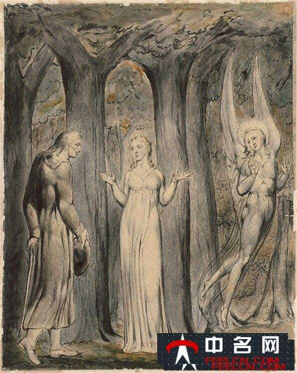
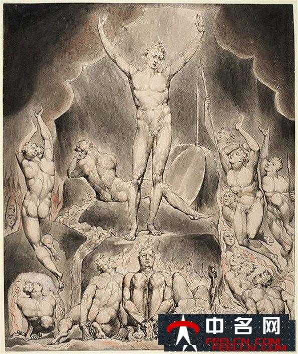
约翰·弥尔顿(John
Milton，1608年12月9日∼1674年11月8日)英国诗人、政论家，民主斗士，英国文学史上最伟大的六大诗人之一。弥尔顿是清教徒文学的代表，他的一生都在为资产阶级民主运动而奋斗，代表作《失乐园》与荷马的《荷马史诗》、阿利盖利·但丁的《神曲》并称为西方三大诗歌。
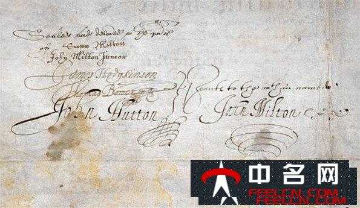
1674年11月8日，这位伟大的英国诗人终于与世长辞，在身边陪伴他的只有几位最知心的朋友。他最伟大的作品《失乐园》采用宗教讽喻的形式，展示了作者的思想观点;其基本思想让人一目了然：即揭露当时的反革命力量，表达对自由的强烈呼吁。
· 弥尔顿失乐园简介 ·
我一直对宗教故事很感兴趣，尤其是基督教的故事，甚至是希腊神话。也曾去旁听过一次基督教史的课程，可惜由于从未看过《圣经》，因而几乎听不懂。
不过，这并不影响《失乐园》的阅读。《失乐园》是描写人类堕落的长篇史诗，讲述了人祖亚当和夏娃在伊甸园中原奉纯真无邪，因魔鬼撒旦的诱惑而反抗上帝的旨意，以致干堕落致罪的过程。诗中的主角是撒旦(也以恶魔之名出现)是第一个背叛上帝，发动天国叛乱的堕落天使，他的同伴也是破逐出天国的天使。为了唆使亚当与夏娃反抗上帝，撒旦经历了各种危险和考验。
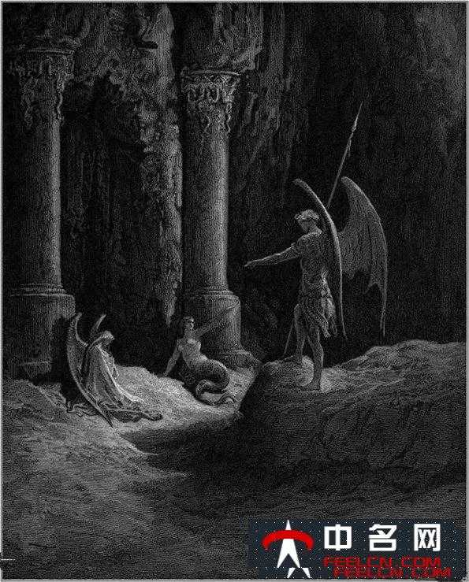
让亚当与夏娃犯下“原罪的原罪”，无疑就是这种对美好的好奇与追求以及，爱情。这两点是上帝造人之后，人身上所固有的特点。从亚当和夏娃，到他们的后代，直到我们，都不曾也未能摆脱。
这两点，无疑是人性上光辉的两点，但同时也可以说是原罪，或是原罪的来源。
时至今日，我们做的绝大多数事仍是由于对于美好的好奇与追求，或是由于爱情。或许，这才是真正的原罪，也是真正的人性吧。
· 怎么看待弥尔顿新闻自由理论 ·
在研读弥尔顿《论出版自由》一书后，笔者主要从以下几个方面来理解弥尔顿阐述的关于出版自由的思想：
弥尔顿认为，出版自由是一种人权自由，它是一切自由中最伟大的自由。弥尔顿控诉了出版许可制的种种弊端。针对有人认为“某些书籍可能使毒素流传”而禁止出版自由的借口，弥尔顿强调关于恶的认识与观察对于人们辨别错误肯定真理十分必要。弥尔顿认为，禁止出版自由的主要危害是破坏学术，窒息真理。
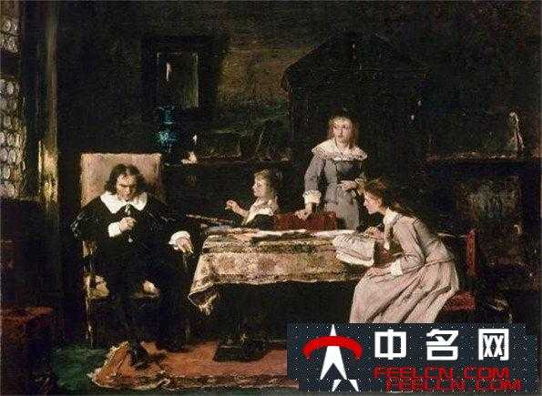
解放后，弥尔顿被译介到国内。但是，在我国的特定历史时代下，弥尔顿更多的是被定上了“革命者”的基调。新时期后，学术界强调对弥尔顿进行“自由主义”的阐释，程式化的解读使人们忽视了其浓厚的宗教色彩和复杂的精神领域。无论是在我国新闻实践领域，还是在社会思潮、普通民众的观念之中，弥尔顿的出版自由思想乃至新闻自由思想还没有得到广泛的传播和普及。
时至今日，国人对新闻自由的解读与践行也多体现在较高的学术层次或特定群体。就我国新闻媒体近二十年的新闻自由度而言，应该说是在不断扩大而且在逐步推进社会的发展。与西方相比较，中国社会整体上还缺乏对新闻自由尊重的传统习惯，法制化程度也相对较低。这与中西方不同的文化传统有关，也与中国特定的现实国情有关。
· 弥尔顿论出版自由的评价 ·
其做出的最主要的贡献和地位是：(1)揭露批判了检查制度的罪恶和无用。(2)论证了言论自由的合理性。(3)论证了保护少数人意见的必要性和合理性。弥尔顿的《论出版自由》是自由主义报业理论上里程碑式的文献，在新闻出版史上占有重要的地位，从理论上阐述了报业自由主义的必然性，在当时的特殊时期之下，通过弥尔顿的《论出版自由》让广大的人民了解到自己发表言论的权利，使百姓觉悟，对自由的话语权产生期盼，并在一定程度上获得了一部分人民的支持，在人民话语权的发展中起到了里程碑的作用。
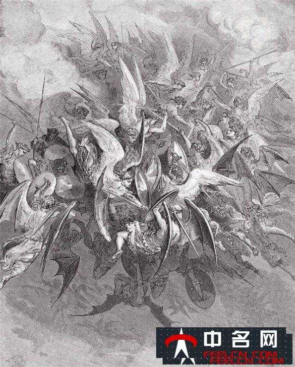
但是在弥尔顿所处的特殊时期里，英国的报业发展还属于不成熟的阶段，是初创的发展阶段，新闻出版的划分范围、界限不确定，新闻出版包括的具体内容有一定的局限性，因此弥尔顿的理论在当时的英国影响虽然起到了为将来报业发展奠基的作用但是在当时的特定时期，作用和影响还是有限。但是到了接下来的17世纪末到18世纪末的法国大革命时期，弥尔顿的《论出版自由》对法国争取新闻自由起到了很大的作用，人们开始重新印刷此书，并开始广为流传，影响力也逐渐的增长，又一次使人民觉悟，意识到自由言论的重要性，让民众自由的认识，自由的发言，自由的讨论，脱离政府的束缚的重要性，由此，弥尔顿和他的《论出版自由》开始成为了资产阶级和广大群众反对封建统治、争取新闻出版自由的锐利武器。
· 英国诗人弥尔顿的成就 ·
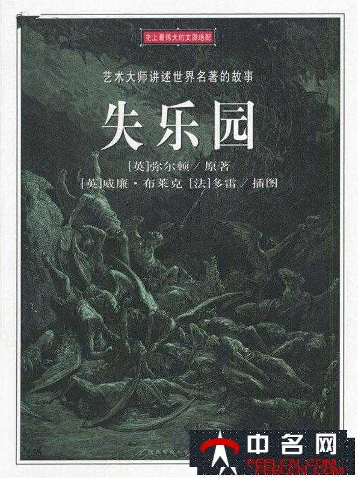
弥尔顿在《论教育》一文中严厉批评了当时英国学校的教育.指出学校“违反常规地强迫头脑中空无所有的孩子去写作文、写诗、写演说词”,还用很长的时间学习日常少用的希腊语和拉丁语等,浪费了青少年的宝贵青春.到了大学,经院主义的逻辑学和形而上学又成为学生的主课,无法获得有用的知识,学生极易成为愚昧无知、唯利是图或野心勃勃的小人.因此,这样的教育已经到了非改革不可的程度,这是关系到民族存亡的大事.
他出生于伦敦一个富裕的清教教徒的家庭，于剑桥大学毕业，曾见到过被天主教会囚禁的伽利略，他不断的抨击教会，主张按民主原则改革国教的政论文章，引起了公众注意。弥尔顿一生的婚姻生活磕磕绊绊，总是不太顺利，于是自己不断的写一些讨论有关婚姻、离婚的小册子，也恰恰因为这些小册子，弥尔顿被国会招去问话，深感风怒与不解之下，将满腹的怨愤化为文字，表达出自己的不满，终于于1644年写出了《论出版自由》。
· 弥尔顿降生颂歌赏析 ·
这首诗是采用民谣体创作的经典之作，浪漫主义产生了一定的促进作用。它的主题是诗人对露西和对祖国英格兰深深爱恋，意境凄美，感情真挚自然。
从韵律上看，这首诗的前三个诗节压的是行尾交叉韵(单数诗句四音部抑扬格，双数诗句三音部抑扬格交替转换)，最后一诗节韵式为成对韵。
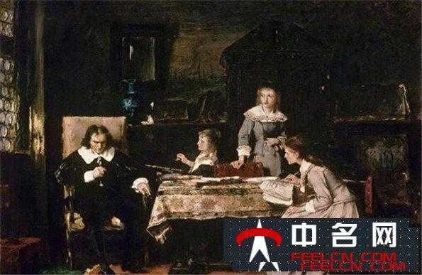
在韵律上，此诗采用谣曲形式(四音步抑扬格与三音步抑扬格相间押交韵)，这些语言形式的特点也与诗中乡村姑娘的形象贴合得当，和谐统一。从艺术手法上看，此诗似无技巧，其实是浑然天成，不露痕迹。如果我们细细阅读，就可看出此诗处处暗含对比。第二小节则连用两个比喻来进行对比。
· 弥尔顿悼亡妻写作背景 ·
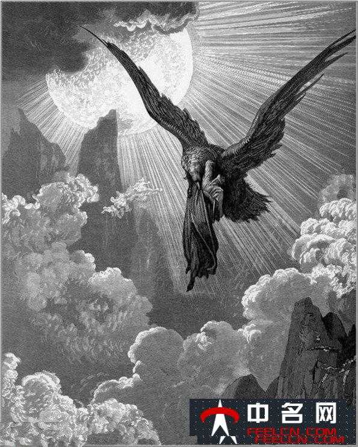
弥尔顿的这首悼亡诗则受宗教的影响较大。这首诗的最动人之处也在于其深刻的宗教特征。他呼唤他那圣徒般的妻子，她不仅在肉体上是纯洁的，而且精神上也是圣洁的，她正是爱情、甜蜜和善良的
人格化身。她被比作阿尔塞斯蒂斯这一自我牺牲的象征，甚至可以说是耶稣基督的非
基督教对应物，尽管在一个有限的范围内是如此。这一女性观念也许同中世纪日耳曼的崇敬妇女(Frauendiest)之观念有着一些关系，当然这里面骑士的谦卑是没有的，但却保持了宗教崇拜的成分。
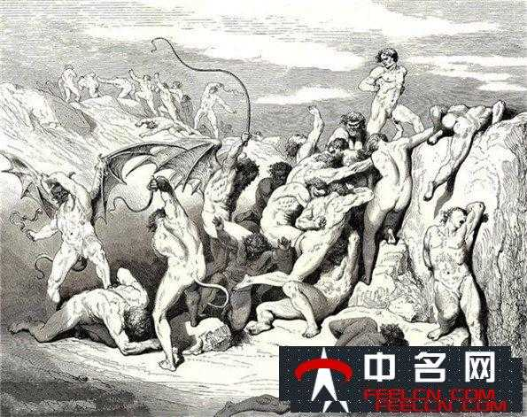
对于这一态度埃拉斯谟(Erasmos)在《战斗的基督教徒手册》(Enehiridion Militia Christiani，I.7) 2
.清晰的表述，他在书中说道，“你说你爱你的妻子，因为她是你的配偶。这里其实根本没有什么品德可言。甚至异教徒也能做到这点，这种爱情只是建立在肉体快感上的。但是另一方面，如果你爱她是因为你在她身上看到了基督的形象，在她身上感觉出了基督的虔敬、谦恭和纯洁，那么你爱她并非是爱她的人，而是爱她身上所体现的基督。你爱她身上的基督
。达就是我们所说的精神上的爱。”
· 弥尔顿悼亡妻赏析 ·
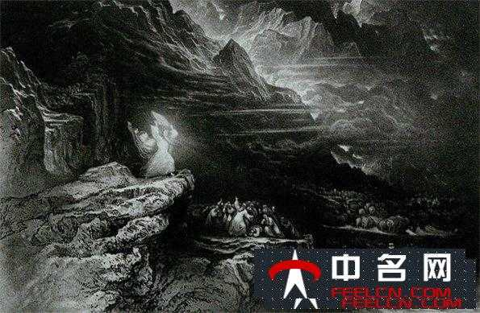
悼妻之诗应属于爱情诗中的一种。西方的爱情以刚为美，热情奔放，耿直率真;中国的爱情诗以柔为美，委婉含蓄，隐而不露。例如，同是梦见亡妻,苏轼首先是写了一段内心的感受才引娓娓道来,而弥尔顿则开门见山的说出:“我仿佛看到了去世不久的圣徒般的妻
回到了我身边”，所写的感情也没有苏轼的婉转，让人体会到一种悲壮美。
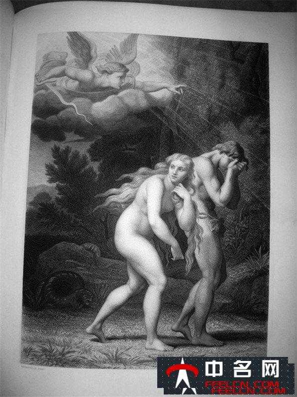
总起来说，弥尔顿这首诗直露率直、寓意深刻，苏轼这首词则委婉曲折、蕴含微妙。虽然上面比较的是两首悼亡诗，但西方的豪迈洒脱，中国诗词简洁隽永这种风格还是能体现出来。不同的情趣是由其不同的历史，文化、宗教渊源造成的，其审美的价值很值得我们去深入探讨，认真借鉴。
· 弥尔顿失乐园赏析 ·
《失乐园》运用《圣经》题材，塑造了叛逆者撒旦的形象。《复乐园》借基督受难的故事，反映英国资产阶级革命失败后作者对革命的坚定态度，但在思想内容和艺术成就上都不及《失乐园》。《力士参孙》是诗体悲剧，描写为敌人包围的参孙，虽然被挖去双眼，但仍坚毅不屈，最后不惜与敌人同归于尽;全诗表达了诗人对王政复辟的愤怒。
《失乐园》是诗人最成功的一部作品，标志着诗人创作的高峰。它高度地凝聚着诗人对英国资产阶级革命进程的亲身感受。面对斯图亚特王朝复辟的黑暗现实，弥尔顿愤嫉邪恶，向往光明，形象地体现了自己威武不屈、贫贱不移和坚持反抗的斗争精神。当时，纵使革命处于低潮的年代，人们依然可以从他的《失乐园》中，感受到资产阶级反对封建专制的光辉战斗。
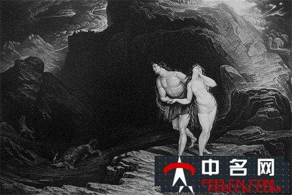